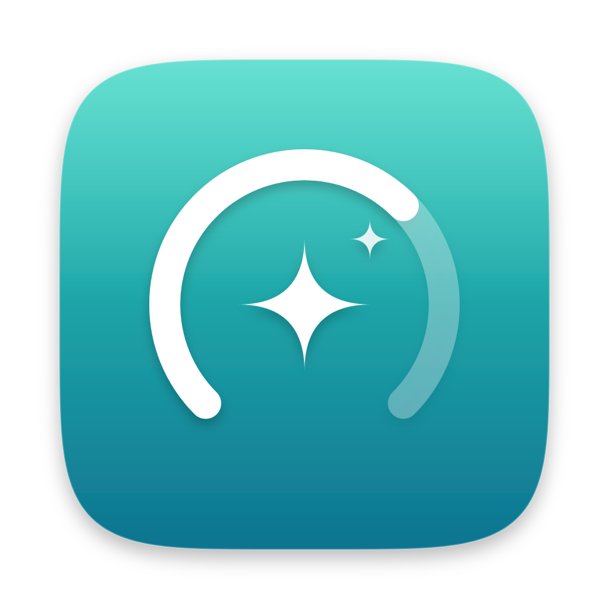
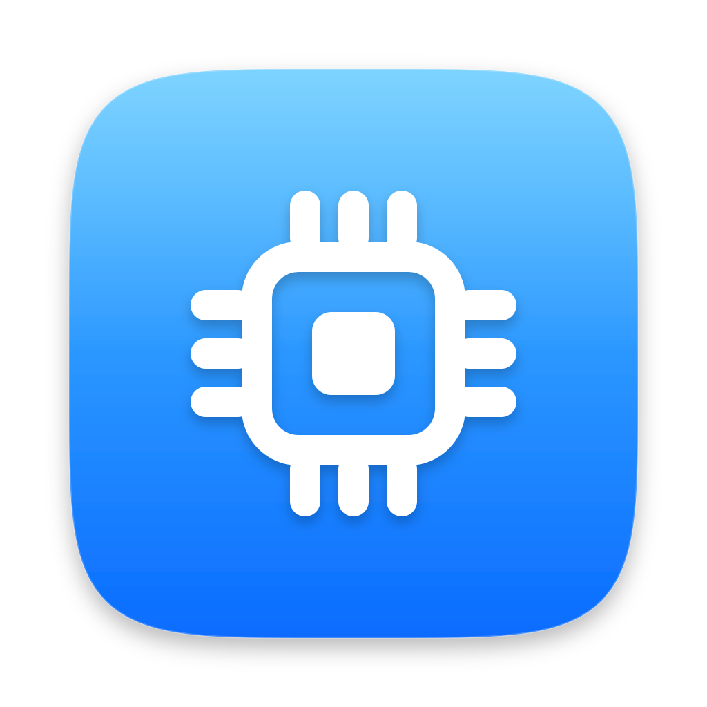

Noktah Icon Pack
8 ikon bergaya macOS untuk panel notch — versi berwarna dan versi glyph.
Musikmusic.svg
Kuota AIai-quota.svgLiriklyrics.svgFokusfocus.svgTugastasks.svg
Sistemsystem.svgChat AIai-chat.svgPengaturansettings.svg
Versi glyph di atas notch